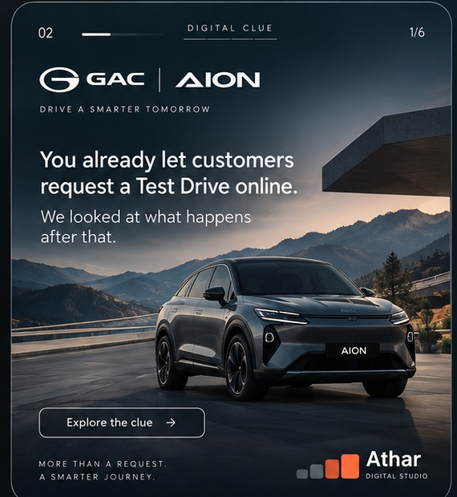
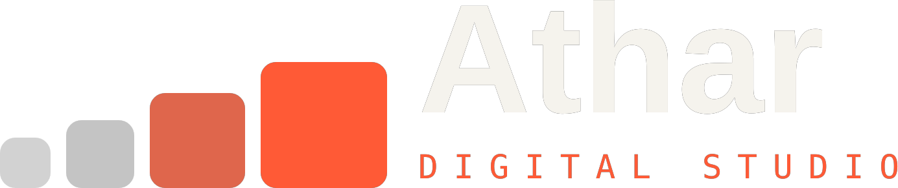

<!doctype html>
<html lang="en"><head><meta charset="utf-8"><meta name="viewport" content="width=device-width,initial-scale=1,viewport-fit=cover"><meta name="referrer" content="no-referrer"><title>GAC | AION — Athar Digital Clue</title><style>
:root{--accent:#a7c7da;--accent-soft:#a7c7da33;--bg:#070a0d;--panel:#10161a;--text:#f4f5f5;--muted:#b4bdc0;--line:rgba(255,255,255,.14)}*{box-sizing:border-box}html,body{margin:0;min-height:100%;background:radial-gradient(circle at top,#172026 0%,#070a0d 52%,#030506 100%);color:var(--text);font-family:Inter,Arial,sans-serif}button{font:inherit}.screen{min-height:100vh;display:flex;align-items:center;justify-content:center;padding:20px}.hero-wrap{width:min(575px,94vw);position:relative;filter:drop-shadow(0 28px 55px rgba(0,0,0,.5))}.hero{width:100%;display:block;border-radius:28px}.hero-cta{position:absolute;left:5.8%;top:80.2%;width:37%;height:6.4%;background:transparent;border:0;border-radius:18px;cursor:pointer}.hero-cta:focus-visible{outline:2px solid #fff;outline-offset:4px}.hero-meta{position:absolute;right:15px;top:15px;display:flex;gap:6px}.hero-meta button{border:1px solid rgba(255,255,255,.35);background:rgba(3,8,10,.55);color:#fff;padding:6px 10px;border-radius:999px;font-size:12px;cursor:pointer}.hero-meta button.active{background:#fff;color:#111}.app{max-width:1150px;width:100%;margin:0 auto;padding:20px}.top{display:flex;justify-content:space-between;align-items:center;gap:18px;padding:3px 2px 16px}.nav{display:flex;align-items:center;gap:14px}.count{font-size:13px}.progress{width:170px;height:2px;background:rgba(255,255,255,.12);overflow:hidden}.progress i{display:block;height:100%;background:var(--accent);width:20%}.clue-label{font-size:11px;letter-spacing:.24em;color:#b6c0c3}.lang{display:flex;gap:6px}.lang button{padding:7px 10px;border-radius:999px;border:1px solid rgba(255,255,255,.18);background:transparent;color:#b8c2c5;cursor:pointer;font-size:12px}.lang button.active{background:#fff;color:#111}.brandbar{display:flex;align-items:center;gap:12px;min-width:0}.brandbar img{height:48px;max-width:420px;object-fit:contain;object-position:left center}.brandbar .model{font-size:11px;letter-spacing:.18em;color:#c0c8ca;white-space:nowrap}.panel{background:linear-gradient(180deg,rgba(255,255,255,.045),rgba(255,255,255,.02));border:1px solid var(--line);border-radius:24px;padding:28px;box-shadow:0 20px 70px rgba(0,0,0,.26)}.section-kicker{font-size:11px;letter-spacing:.22em;color:#adb7ba;margin-bottom:14px}.qtitle{font-size:clamp(25px,3vw,38px);line-height:1.08;margin:0 0 10px;max-width:820px}.qsub{font-size:15px;line-height:1.55;color:var(--muted);margin:0 0 20px}.options{display:grid;grid-template-columns:repeat(4,minmax(0,1fr));gap:11px}.opt{position:relative;min-height:138px;text-align:left;border:1px solid rgba(255,255,255,.11);background:#0b1115;color:#fff;border-radius:17px;padding:15px;cursor:pointer;transition:.18s}.opt:hover{transform:translateY(-2px);border-color:rgba(255,255,255,.22)}.opt.sel{border-color:var(--accent);box-shadow:0 0 0 1px var(--accent) inset;background:linear-gradient(180deg,var(--accent-soft),#0b1115)}.opt .sym{font-size:25px;display:block;margin-bottom:24px;opacity:.9}.opt .num{position:absolute;right:11px;top:10px;font-size:11px;color:#788487}.opt b{font-size:16px;line-height:1.15;display:block}.actions{display:flex;justify-content:space-between;gap:10px;margin-top:22px}.btn{border:1px solid rgba(255,255,255,.16);background:transparent;color:#d4dcde;border-radius:12px;padding:12px 18px;cursor:pointer}.btn.primary{background:var(--accent);color:#0b0f10;border-color:transparent;font-weight:700;font-size:16px}.btn:disabled{opacity:.4;cursor:not-allowed}.obs{margin-top:18px;padding:12px 14px;border-left:2px solid var(--accent);background:rgba(255,255,255,.03);font-size:12px;color:#aebabc;line-height:1.45}.obs strong{display:block;font-size:10px;letter-spacing:.18em;color:#e1e7e9;margin-bottom:5px}.reveal{display:none}.reveal.show{display:block}.reveal h2{font-size:clamp(28px,4vw,46px);line-height:1.06;margin:0 0 12px;max-width:900px}.reveal p{font-size:16px;color:var(--muted);line-height:1.6;max-width:820px}.quote{margin:24px 0;padding:20px;border-left:3px solid var(--accent);background:linear-gradient(90deg,var(--accent-soft),transparent);font-size:24px;line-height:1.2}.system{display:grid;grid-template-columns:repeat(5,minmax(0,1fr));gap:10px;margin:25px 0}.node{border:1px solid rgba(255,255,255,.09);border-radius:16px;padding:15px;background:rgba(255,255,255,.025)}.node small{display:block;color:#7e8a8d;font-size:10px;letter-spacing:.12em;margin-bottom:10px}.node b{font-size:13px}.cta-grid{display:grid;grid-template-columns:repeat(3,1fr);gap:14px;margin-top:28px}.cta-card{display:flex;flex-direction:column;justify-content:center;min-height:128px;text-decoration:none;color:#fff;border:1px solid rgba(255,255,255,.16);background:#0b1115;border-radius:18px;padding:24px 22px;transition:.18s}.cta-card:hover{transform:translateY(-2px);border-color:rgba(255,255,255,.28);background:#10171b}.cta-card span{display:block;font-size:12px;color:#899599;letter-spacing:.16em;margin-bottom:12px}.cta-card strong{font-size:22px;line-height:1.15}.footer{margin-top:18px;display:flex;justify-content:space-between;gap:16px;align-items:center;color:#7f8c8f;font-size:11px}.footer img{height:26px;width:auto}.ar .panel,.ar .top{direction:rtl}.ar .brandbar,.ar .actions{direction:rtl}.ar .obs{border-left:0;border-right:2px solid var(--accent)}.ar .opt{text-align:right}.ar .opt .num{right:auto;left:11px}.ar .quote{border-left:0;border-right:3px solid var(--accent);background:linear-gradient(270deg,var(--accent-soft),transparent)}@media(max-width:900px){.options{grid-template-columns:repeat(2,minmax(0,1fr))}.system{grid-template-columns:repeat(2,minmax(0,1fr))}.cta-grid{grid-template-columns:1fr}.top{align-items:flex-start;flex-wrap:wrap}.brandbar{order:3;width:100%}}@media(max-width:560px){.screen{padding:12px}.hero-wrap{width:100%;max-width:540px}.app{padding:12px}.panel{padding:20px;border-radius:19px}.opt{min-height:126px;padding:13px}.opt .sym{margin-bottom:20px}.footer{flex-direction:column;align-items:flex-start}.brandbar img{max-width:290px;height:42px}.hero-cta{left:6%;top:80.5%;width:37.5%;height:6%}.cta-card{min-height:112px;padding:20px}.cta-card strong{font-size:20px}}

.footer-brand{display:flex;align-items:center;gap:9px;min-width:0}.footer-brand img{height:26px;width:auto;max-width:150px;object-fit:contain}.cta-grid{margin-top:28px;margin-bottom:0}.cta-card strong{color:var(--accent);letter-spacing:.01em}.cta-card:hover strong{color:#fff}.source{margin:28px 4px 4px;padding-top:6px;color:#8f9a9d;font-size:12px;line-height:1.65;text-align:left}.ar .source{text-align:right}
</style>
<!-- Athar Clue Import asset manifest: keep local assets discoverable by the Builder validator. -->
<link rel="preload" as="image" href="assets/hero.jpg">
<link rel="preload" as="image" href="assets/client-lockup.png">
<link rel="preload" as="image" href="assets/athar-logo-en.png">
</head><body><div id="root"></div><script>
const CONFIG={"model": "AION V", "questions": [{"title_en": "THE REQUEST", "title_ar": "الطلب", "q_en": "A customer submits a test-drive request online. What should the journey remember beyond their contact details?", "q_ar": "عندما يرسل العميل طلبًا لتجربة القيادة أونلاين، ما الذي يجب أن تتذكره الرحلة إلى جانب بيانات التواصل؟", "opts_en": [{"icon": "▣", "label": "Model"}, {"icon": "◷", "label": "Timing"}, {"icon": "⌖", "label": "Location"}, {"icon": "◎", "label": "Intent"}], "opts_ar": [{"icon": "▣", "label": "الموديل"}, {"icon": "◷", "label": "التوقيت"}, {"icon": "⌖", "label": "الموقع"}, {"icon": "◎", "label": "النية"}]}, {"title_en": "THE SIGNAL", "title_ar": "الإشارة", "q_en": "Once that signal is captured, what should the next digital step use it for?", "q_ar": "بعد التقاط هذه الإشارة، في ماذا يجب أن تستخدمها الخطوة الرقمية التالية؟", "opts_en": [{"icon": "✓", "label": "Confirm"}, {"icon": "△", "label": "Prepare"}, {"icon": "◇", "label": "Personalise"}, {"icon": "→", "label": "Route"}], "opts_ar": [{"icon": "✓", "label": "التأكيد"}, {"icon": "△", "label": "التحضير"}, {"icon": "◇", "label": "التخصيص"}, {"icon": "→", "label": "التوجيه"}]}, {"title_en": "THE JOURNEY", "title_ar": "الرحلة", "q_en": "Before the test drive, what should stay connected across the journey?", "q_ar": "قبل تجربة القيادة، ما الذي يجب أن يبقى مترابطًا ضمن الرحلة؟", "opts_en": [{"icon": "▣", "label": "Model"}, {"icon": "◷", "label": "Appointment"}, {"icon": "◇", "label": "Preferences"}, {"icon": "⌘", "label": "Contact"}], "opts_ar": [{"icon": "▣", "label": "الموديل"}, {"icon": "◷", "label": "الموعد"}, {"icon": "◇", "label": "التفضيلات"}, {"icon": "⌘", "label": "التواصل"}]}, {"title_en": "THE HANDOFF", "title_ar": "الخطوة التالية", "q_en": "After the test drive, what should the next interaction reflect?", "q_ar": "بعد تجربة القيادة، ما الذي يجب أن تعكسه الخطوة التالية؟", "opts_en": [{"icon": "◎", "label": "Interest"}, {"icon": "▣", "label": "Model"}, {"icon": "→", "label": "Readiness"}, {"icon": "⌁", "label": "Next action"}], "opts_ar": [{"icon": "◎", "label": "الاهتمام"}, {"icon": "▣", "label": "الموديل"}, {"icon": "→", "label": "الجاهزية"}, {"icon": "⌁", "label": "الخطوة التالية"}]}, {"title_en": "THE CLUE", "title_ar": "الفكرة", "q_en": "What if a test-drive request became a signal that activates a more personal journey?", "q_ar": "ماذا لو أصبح طلب تجربة القيادة إشارة تُفعّل رحلة أكثر تخصيصًا للعميل؟", "opts_en": [{"icon": "→", "label": "Route"}, {"icon": "△", "label": "Prepare"}, {"icon": "⌁", "label": "Follow up"}, {"icon": "⌘", "label": "Connect"}], "opts_ar": [{"icon": "→", "label": "توجيه"}, {"icon": "△", "label": "تحضير"}, {"icon": "⌁", "label": "متابعة"}, {"icon": "⌘", "label": "ربط"}]}], "obs_en": "GAC already lets customers request a test drive online. We're exploring how the information behind that request could shape a more relevant next step.", "obs_ar": "يتيح موقع GAC للعميل طلب تجربة قيادة أونلاين. نستكشف هنا كيف يمكن للمعلومات التي يحملها هذا الطلب أن تساعد في تحديد الخطوة الرقمية التالية بشكل أكثر صلة بالعميل.", "reveal_title": "A test-drive request can become a journey signal.", "reveal_ar": "طلب تجربة القيادة يمكن أن يكون أكثر من نموذج بيانات؛ يمكن أن يصبح إشارة تبدأ منها الخطوة التالية.", "reveal_text": "The opportunity is a concept for connecting intent, model interest and the next action around the test-drive journey — without assuming how GAC currently operates.", "reveal_ar_text": "تصوّر لربط نية العميل واهتمامه بالموديل وتوقيت التجربة بالخطوة الرقمية التالية، بحيث لا تتوقف الرحلة عند إرسال الطلب.", "concept": "A smarter test-drive journey", "concept_ar": "رحلة تجربة قيادة تبدأ من الإشارة", "nodes": ["Request", "Signal", "Route", "Prepare", "Continue"], "nodes_ar": ["طلب", "إشارة", "توجيه", "تحضير", "متابعة"]};let lang='en',step=0,selected=null;const root=document.getElementById('root');
const QUESTIONS=CONFIG.questions;
function t(en,ar){return lang==='en'?en:ar}
function hero(){root.className='';root.innerHTML=`<div class="screen"><div class="hero-wrap"><div class="hero-meta"><button id="heroEN" class="active">EN</button><button id="heroAR">AR</button></div><button class="hero-cta" id="enter" aria-label="Explore the clue"></button></div></div>`;const en=document.getElementById('heroEN'),ar=document.getElementById('heroAR');en.onclick=()=>{lang='en';en.classList.add('active');ar.classList.remove('active')};ar.onclick=()=>{lang='ar';showApp()};document.getElementById('enter').onclick=()=>showApp()}
function showApp(){step=0;selected=null;root.className=lang==='ar'?'ar':'';root.innerHTML=`<div class="app"><div class="top"><div class="nav"><span class="count">02</span><span class="progress"><i id="prog"></i></span><span class="clue-label">DIGITAL CLUE</span></div><div class="lang"><button id="en" class="${lang==='en'?'active':''}">EN</button><button id="ar" class="${lang==='ar'?'active':''}">AR</button></div></div><div class="top"><div class="brandbar"><span class="model">${CONFIG.model}</span></div></div><section class="panel" id="quiz"></section><section class="panel reveal" id="reveal"></section><div class="footer"><div class="footer-brand"></div><span>Web • Mobile • Systems • Growth</span></div></div>`;document.getElementById('en').onclick=()=>{lang='en';showApp()};document.getElementById('ar').onclick=()=>{lang='ar';showApp()};draw()}
function draw(){document.getElementById('prog').style.width=((step+1)/6*100)+'%';if(step<QUESTIONS.length){const q=QUESTIONS[step],opts=lang==='en'?q.opts_en:q.opts_ar;document.getElementById('quiz').style.display='block';document.getElementById('reveal').classList.remove('show');document.getElementById('quiz').innerHTML=`<div class="section-kicker">${q.title_en} · 0${step+1} / 05</div><h2 class="qtitle">${lang==='en'?q.q_en:q.q_ar}</h2><p class="qsub">${t('Select the option that best describes the journey.','اختاروا الخيار الأقرب إلى الرحلة.')}</p><div class="options">${opts.map((o,i)=>`<button class="opt" data-i="${i}"><span class="sym">${o.icon}</span><span class="num">0${i+1}</span><b>${o.label}</b></button>`).join('')}</div><div class="actions"><button class="btn" id="back">${t('Back','رجوع')}</button><button class="btn primary" id="next" disabled>${t('Continue →','متابعة ←')}</button></div><div class="obs"><strong>WHAT WE'RE EXPLORING</strong>${t(CONFIG.obs_en,CONFIG.obs_ar)}</div>`;document.querySelectorAll('.opt').forEach(b=>b.onclick=()=>{document.querySelectorAll('.opt').forEach(z=>z.classList.remove('sel'));b.classList.add('sel');selected=b.dataset.i;document.getElementById('next').disabled=false});document.getElementById('next').onclick=()=>{step++;selected=null;draw()};document.getElementById('back').onclick=()=>{if(step>0){step--;selected=null;draw()}else hero()}}
else{document.getElementById('quiz').style.display='none';const r=document.getElementById('reveal');r.classList.add('show');r.innerHTML=`<div class="section-kicker">THE REVEAL</div><h2>${t(CONFIG.reveal_title,CONFIG.reveal_ar)}</h2><p>${t(CONFIG.reveal_text,CONFIG.reveal_ar_text)}</p><div class="quote">${t(CONFIG.concept,CONFIG.concept_ar)}</div><div class="system">${(lang==='en'?CONFIG.nodes:CONFIG.nodes_ar).map((n,i)=>`<div class="node"><small>0${i+1}</small><b>${n}</b></div>`).join('')}</div><div class="actions"><button class="btn primary" id="replay">${t('Replay clue ↗','إعادة التجربة ↗')}</button></div><div class="cta-grid"><a class="cta-card" href="mailto:hello@studioathar.studio"><span>01</span><strong>${t('Share your feedback','شاركنا رأيك')}</strong></a><a class="cta-card" href="https://studioathar.studio/" target="_blank" rel="noopener"><span>02</span><strong>${t('Meet Athar','تعرّف على أثر')}</strong></a><a class="cta-card" href="https://studioathar.studio/solution-indicator/?lang=en" target="_blank" rel="noopener"><span>03</span><strong>${t('What could we improve?','ماذا يمكن أن نحسّن؟')}</strong></a></div>`;document.getElementById('replay').onclick=()=>{step=0;selected=null;draw()}}}
hero();
</script></body></html>